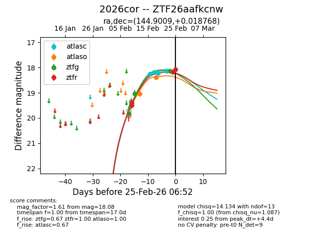
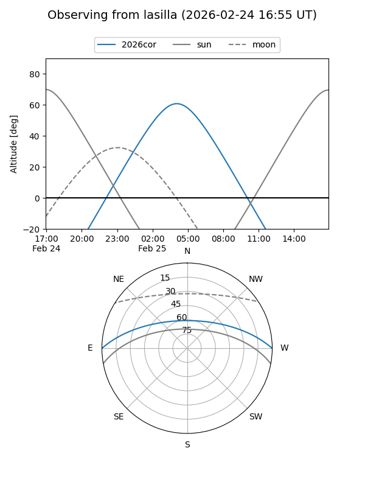
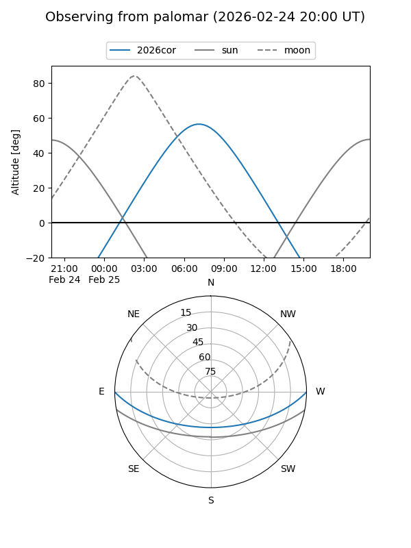
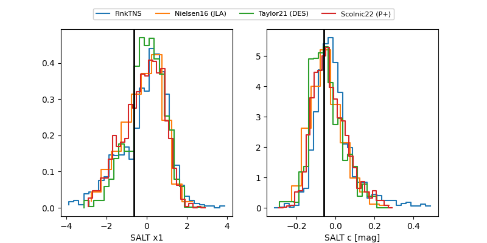

2026cor
Target 2026cor at 2026-02-25 06:53
Aliases and brokers:
FINK: link
Lasair: link
ALeRCE: link
TNS: link
YSE: link
alt names
ZTF26aafkcnw (ztf,fink_ztf)
2026cor (tns,yse)
Coordinates:
equatorial (ra, dec) = 144.9009,+0.01877
equatorial (HMS+DMS) = 09:39:36.22,+00:01:07.57
galactic (l, b) = (235.2635,+36.59436)
Flags:
Photometry:
last atlasc=18.14, atlaso=18.39, ztfg=18.18, ztfr=18.08
4 atlasc, 2 atlaso, 4 ztfg, 4 ztfr detections
Lightcurve

Visibility


Additional plots
